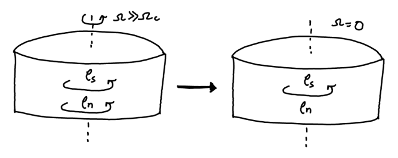
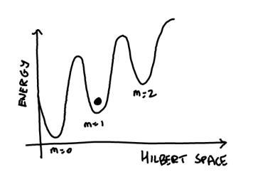
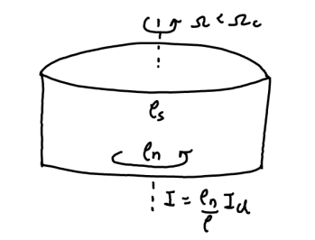

Superfluidity and superconductivity might be, in my opinion, one of the most intriguing phenomena that presents quantum behaviour at a macroscopic scale. However, they manifest in a variety of different manners depending on the geometry of the setup and other specifics of the experiment, making it hard to provide a strict definition for what a superfluid/superconductor is. Loosely speaking though, it is widely accepted that they are a collection of phenomena arising due to the systems capacity to host hydrodynamic flow with zero viscosity/resistance. However, recently I have been trying to understand what exactly causes a quantum many-body system to exhibit these phenomena from a microscopic point of view, and viscosity is not the easiest quantity to work with for this purpose. So let us try to see if there are friendlier quantities that let us peek behind the curtains.
(Note: Although superconductivity can be rationalized as superfluidity in a charged system, the added complexity of satisfying Maxwell’s equations results in the manifestation of new effects as well. As such, we restrict ourselves to the somewhat simpler superfluids here and leave the discussion of superconductivity for another day.)
Characterizing superfluidity
When I think about superfluidity, few of the phenomena that immediately come to mind are superleaks and supercreep, where the fluid is able to seep through the pores of the container and climb out of the walls of the container respectively. While these are certainly the most eye-catching phenomena, they are not particularly nice to work with in a theoretical framework. Perhaps a more wieldy (and practically interesting) manifestation of superfluidity is the persistence of metastable currents.

Suppose we have a cylindrical bucket filled with a superfluid and it is rotated rapidly. If the rotation is now suddenly stopped, the fluid continues rotating for long time-scales without any dissipation! Such an effect is typically explained through the existence of quantized vortices in such superfluids (which generally arise due to the existence of a condensate, but we will come back to this). It is also fundamentally a dynamical/kinetic phenomena since it requires the existence of energy barriers that prevent decay to the true ground state of the system.

We instead consider another closely related phenomena that is defined in an equilibrium setting, namely the Hess-Fairbank effect (its superconducting analogue is the Meissner effect). Suppose the bucket is initially at rest and is then rotated at a very small angular velocity (upto some critical threshold that is determined by the geometry of the setup). Once the system has equilibriated, if we measure the moment of inertia of the system, it would be smaller than the expected value of a classical fluid!

This lends itself to a phenomenological description of the system in terms of the well known two-fluid model, where the system behaves as a composite of a superfluid with density \(\rho_s\) that carries no entropy or viscosity and the normal fluid with density \(\rho_n\) that behaves as a classical fluid. In the context of this experiment, the superfluid fraction would simply remain at rest despite the rotation of the container walls, resulting in a reduction of the measured moment of inertia. Such a hydrodynamic treatment elevates the superfluid density and velocity to thermodynamic variables and serves as an effective field theory for the system dynamics at a coarse level. While this has had enormous success in explaining a ton of experimental predictions, it is also prominently featured in most introductory texts on the topic. In this post we will instead consider a less advertised, but heavily used approach to relate this superfluid fraction with microscopic features of the system without making references to viscosity or other dynamical responses.
(Note: It must be kept in mind that superfluidity really evolved as a phenomenological field first to keep up with experimental observations, followed by more microscopic treatments to bridge the gaps. As such, there are several ways to characterize the superfluid behaviour depending on the specific system, not all of which may result in equivalent descriptions. For instance, in lower dimensions or non-interacting systems, one may observe Hess-Fairbank but not metastable currents. On the other hand, we have things like the Landau criterion that characterizes dissipation through a restriction on the excitation spectrum, but is neither necessary nor sufficient for superfluidity. Finally, there is an equivalence typically made that a Bose-Einstein condensate is a superfluid due to its ability to support quantized vortices, but this need not always be the case, especially in lower dimensions. The point here is that there are nuances involved in making broad sweeping claims about what constitutes a superfluid, so in this post we really just consider some subset of superfluids that exhibit the Hess-Fairbank effect as a defining feature.)
Arriving at a microscopic definition
Let us consider \(N\) interacting bosons on a ring of radius \(R\). In order to impart angular momentum to the system, we model the interaction between the bosons and the walls of the ring with a weak potential \(\epsilon \cdot U(r - \Omega R t)\) that is rotating with an angular velocity \(\Omega\) with a strength \(\epsilon \ll 1\).
\[ H = \sum_i \left(-\frac{1}{2m}\frac{\partial^2}{\partial r_i^2} + \epsilon \cdot U(r_i - \Omega R t)\right) + \sum_{i<j} V_{int}(|r_i - r_j|) \]
In order to treat this system in a time-independent setting, we move over to the co-rotating frame of reference through a transformation \(U(\Omega) = \exp(-i\Omega t \sum_i L_{z, i})\) where \(L_{z, i}\) is the angular momentum operator of the \(i^{th}\) boson.
\[\begin{align*} H' &= UHU^{\dagger} + iU \frac{dU}{dt} U^{\dagger} \\ &= H - \sum_i \Omega L_{z, i} \\ &= \sum_i \left(-\frac{1}{2m}\frac{\partial^2}{\partial r_i^2} + \epsilon \cdot U(r_i)\right) + \sum_{i<j} V_{int}(|r_i - r_j|) - \sum_i m\Omega r_i \frac{\partial}{\partial r_i} \end{align*}\]
Since the potential is very weak and only serves the purpose of imparting momentum such that the system may reach equilibrium, we can ignore it henceforth (one may imagine a process where the system is brought to equilibrium and then \(\epsilon\) is turned off adiabatically). Now, suppose the angular velocity \(\Omega \ll \Omega_c\) is small such that the superfluid fraction remains at rest in the lab frame. Then in the rotating frame, one would expect the mechanical angular momentum \(\langle \mathcal{L}_z \rangle = \langle \sum_i m r_i \times v_i \rangle = -(\rho_s/\rho) I_{cl}\) where \(I_{cl}=NmR^2\) is the classical moment of inertia. Note that \(\mathcal{L_z} \neq L_z = \sum_i r_i \times p_i\) where \(p_i\) is the canonical momentum, equivalent to the mechanical momentum as measured in the lab frame.
To find the relation between these angular momenta, we notice that since the Hamiltonian in the rotating frame has changed, the commutation relation between the canonical linear momentum and the position operator has changed as well. Working in the Heisenberg picture, we have the velocity operator in the rotating frame, \(v_i = dr/dt = [H', p] = p/m - \Omega r\) where we notice an extra centrifugal contribution as expected. This immediately gives us \(\langle L_z \rangle = \langle \mathcal{L}_z\rangle + I_{cl} \cdot \Omega = -(\rho_s/\rho)\cdot I_{cl} \cdot\Omega + I_{cl} \cdot \Omega = (\rho_n/\rho) \cdot I_{cl} \cdot \Omega\), which is exactly what we would expect since the angular momentum as measured from the lab frame would only have contributions from the normal fraction. Now, to relate this with a measurable property of the system, we use the Hellman-Feynman theorem:
\[ \frac{dE}{d\Omega} = \left \langle \frac{d H}{d \Omega} \right \rangle = \langle L_z \rangle = -(\rho_s/\rho)\cdot I_{cl} \cdot\Omega + I_{cl} \cdot \Omega \]
We thus notice that the second derivative of the energy with respect to the angular momentum gives us the normal fraction of the system. However, at this point we must realize that the fact that this relation arose specifically from a rotating setup is simply obfuscating a more general property of the ground state of the system. We can see this more clearly if we rewrite the Hamiltonian in the rotating frame in a slightly different manner;
\[ H' = \sum_{i} -\frac{1}{2m} \left(\frac{\partial}{\partial r_i} - m \Omega r_i\right)^2 + \sum_{i<j} V_{int}(|r_i - r_j|) + \sum_i \frac{1}{2}m \Omega^2 r_i^2 \]
We see that in this form, the rotation simply acts as an artifical gauge field \(A_i = m\Omega r_i\). It is an artificial one since it additionally alters the Hamiltonian by adding a centrifugal term (which is exactly what gives rise to the \(I_{cl} \cdot \Omega\) term in our expression for \(dE/d\Omega = \langle L_z \rangle\)). This is also where we may draw a parallel with superconductivity where the role of the gauge field is played by the magnetic vector potential instead.
At this point, we can recover the original Hamiltonian (upto the centrifugal term) by simply performing the following transformation \(\psi(r_1, \dots, r_N) \to \exp(i \cdot m\Omega R\sum_i r_i) \cdot \psi(r_1, \dots, r_N)\). This gets rid of the gauge potential term, and transfers the burden onto the boundary conditions instead. While the system original obeyed periodic boundary conditions where \(\psi(r_1 + 2\pi R, \dots, r_N) = \psi(r_1, \dots, r_N)\), we now have twisted boundary conditions where \(\psi(r_1 + 2\pi R, \dots, r_N) = \exp(2\pi i \cdot m\Omega R^2 \Omega) \cdot \psi(r_1, \dots, r_N)\). Now we can forget that we arrived here from the context of a rotating system (and along with it, throw away the annoying centrifugal term that has been tagging along) and cast this result in a completely abstract manner.
The superfluid fraction is then defined like so (there are proportionality factors depending on the system size, etc, that I have not explicitly written): \[ \frac{d^2 E}{d\theta^2} \sim \frac{\rho_s}{\rho} \]
Where \(E\) is the ground state energy of the original Hamiltonian under twisted boundary conditions \(\psi(r_1 + 2\pi R, \dots, r_N) = \exp(i \theta) \cdot \psi(r_1, \dots, r_N)\). We thus see that the superfluid response of a system is not really tied to rotation specifically, but rather to the resistance of the system to phase twists. If the energy remains the same under a twist, the system does not exhibit superfluidity. This notion somehow ties in nicely with our intuitive understanding that superfluidity is closely related to the phase of the system (generally the superfluid velocity can be written as the gradient of the phase of a condensate wave-function).
Why bother?
Now that we have a concrete measure of an aspect of superfluidity, a very interesting question arises. When exactly does a many-body system exhibit this property? We know that a dilute Bose gas exhibits superfluidity and also forms a Bose-Einstein condensate (BEC). Similarly, we have Cooper pairs of electrons in a metal that condense in similar manner to a BEC and exhibits superconductivity. It clearly seems that superfluidity is closely related to the idea of condensation and \(U(1)\) symmetry breaking. One may even be enticed to make the equivalence of the condensate fraction with the superfluid fraction of the system. However, we know for a fact that at \(T=0\), He\(^4\) (the first superfluid we discovered) has a superfluid fraction of \(1\), but only a condensate fraction of \(\sim 0.1\). On the other hand, we have superfluids in 1D and 2D Bose gases despite the non-existence of a condensate. We are thus forced to accept that the relation between superfluidity and condensation is much more nuanced. Perhaps we will revisit this idea in more depth sometime.
References
Usually my tidbits don’t have references since they are ideas I stumbled upon myself, but this post is largely based on things that are well known and have been explored for decades. As such, there are a couple of resources I found that explain these things in far more depth.
- Jean Dalibard’s notes on all things cold atoms - Just an excellent collection of notes that talk about things that are not covered in the usual BEC texts.
- On the Superfluid Fraction of an Arbitrary Many-Body System at T=0 - A very readable paper by Leggett that introduced me to this notion of a superfluid fraction. The questions posed in the last paragraph are tackled here in good detail.